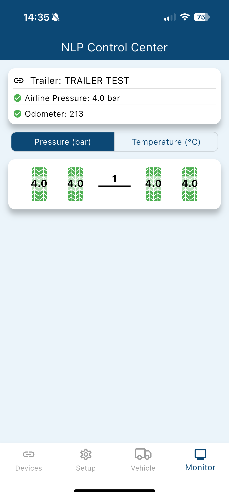
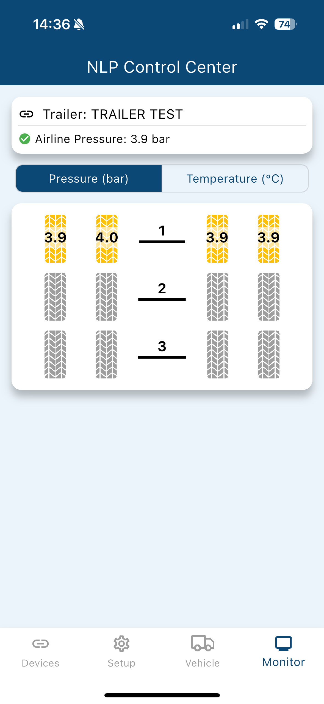
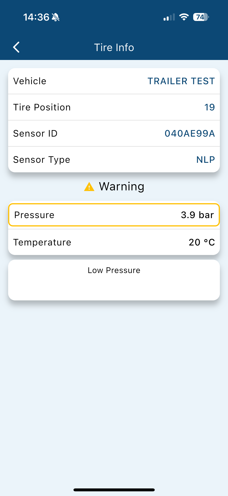
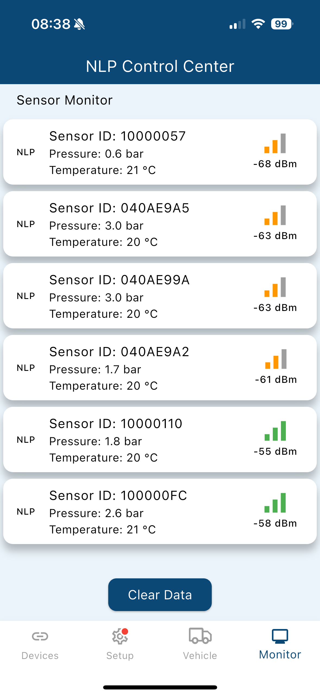

Monitor Screen¶
The Monitor Screen provides real-time updates and status information about the connected device and sensors. It adapts its display based on the communication type (Filtered or Unfiltered). Below are the details for both modes:
Filtered Devices¶
Vehicle Specific Data¶
For Filtered Devices, the Monitor Screen displays vehicle-specific data and tire sensor information in an organized layout.
- Shows the type of vehicle (e.g., truck or trailer) currently being monitored.
- Displays the name of the vehicle for easy identification.
Trailer-Specific Details¶
- If the trailer is equipped with an Airline Sensor, the status and pressure of the airline will be displayed.
- If the trailer has an Odometer setup, the current odometer value will also be visible.
Sensor and Tire Data¶
The lower section shows the vehicle layout with the data received from the connected sensors. Each tire displays its current pressure or temperature value above it.
Status Indicators¶
- Green: Indicates everything is operating within normal thresholds.
- Yellow: Represents a warning state requiring attention.
- Red: Signals a critical issue that must be addressed immediately.
Tire Details and Warnings¶
By clicking on a tire, you can access more detailed information, including:
- Sensor ID
- Sensor type
- Active warnings or issues
This allows for quick diagnostics and resolution of any problems.
Multiple Vehicle Support (Truck with Trailers)¶
If a truck has one or more connected trailers, you can swipe horizontally to view the data for each vehicle in the chain.
Unfiltered Devices¶
For Unfiltered Devices, the Monitor Screen does not show a vehicle layout. Instead, it displays a simple list of received sensor data:
Sensor Information List¶
When a sensor is detected, the following information is displayed in the list:
- Sensor ID
- Sensor type
- Pressure value
- Temperature value
- Signal Strength
This mode provides a raw, unstructured view of sensor data without vehicle-specific configurations.
| Filtered Device (all OK and Trailer) | Filtered Device (warning) |
|---|---|
 |
 |
| Tire Details | Sensor List (unfiltered device) |
 |
 |